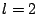

Next: Many-body physics with Ultracold
Up: Detailed-Research-Description_dec05
Previous: Detailed-Research-Description_dec05
Recent and past topics of research:
- In Utrecht, my work with Henk Stoof has involved several topics
in the context of ultracold atomic gases: asymmetric fermionic
pairing, non-equilibrium dynamics near Feshbach resonances, and
rotating Bose gases.
- In late 2004, I started studying Pomeranchuk instabilities,
which later led to a collaboration with J. Quintanilla (Rutherford
Lab, UK). I expect to finish a paper on finite-temperature

Pomeranchuk instabilities in early February 2006.
- With Kareljan Schoutens (Univ. of Amsterdam), I am learning
about entanglement in many-body systems. The aim is to calculate
entropy of bipartite entanglement in quantum Hall states and in
Affleck-Kennedy-Lieb-Tasaki (AKLT) states.
- My interest in the many-body physics of laser-excited excitonic
and electron-hole systems, started at the end of my Ph.D., has
continued during my time at Utrecht. I finished a paper on a
particular luminescence experiment in mid-2005. Now, I am starting
with a study of non-equilibrium steady-state ``condensation'' in the
presence of laser pumping and spontaneous decay.
- With my Ph.D. advisor (Andrei Ruckenstein, Rutgers), I am
re-examining some of the questions that arose during my Ph.D. work
on the weakly interacting Bose gas.
- A long-time interest has been Wigner crystallization
(structures, melting) and 2D electrons on liquid helium.
- Finally, I am exploring several new projects and spinoff
calculations, on which I can start serious work after a couple of the
current projects are written up.
Next: Many-body physics with Ultracold
Up: Detailed-Research-Description_dec05
Previous: Detailed-Research-Description_dec05
M. Haque
2006-01-29